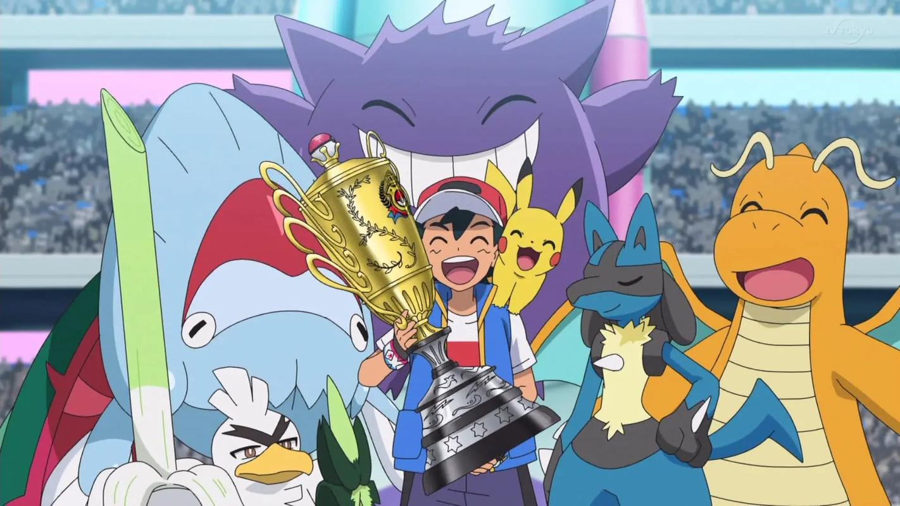
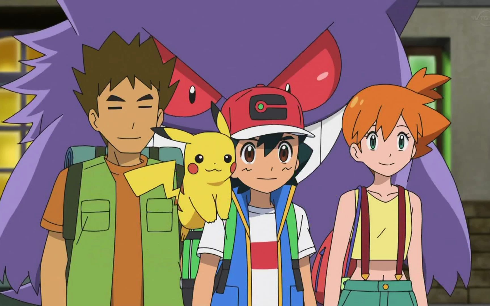

小智的虹色之羽
年满10岁的少年小智终于等到了领取他的第一只宝可梦的时刻，他的旅程也由此展开。小智是个热心热血、有着坚强意志的少年，同时也是个顽皮又浮躁的新人训练家。小智因为弄坏了自己的闹钟，所以没有准时到达大木研究所，只好接受大木博士仅剩的不亲近人类的皮卡丘来作为他的最初的伙伴。旅行之初，小智很懊恼皮卡丘不愿意进入精灵球的状况，并不断地试图将皮卡丘召回精灵球。而皮卡丘也不断地用尾巴将小智的精灵球弹走，让小智很生气。但是在小智看到皮卡丘被烈雀进攻时，他立刻将他们的矛盾抛在脑后，勇敢地冲到皮卡丘前保护了皮卡丘。皮卡丘看到小智拼命保护它的模样，深受感动，他们建立起了深厚的友谊，就在这时，小智和皮卡丘看见传说中的宝可梦凤王在天际翱翔，并拿着凤王落下的虹色之羽立下誓言：“总有一天，我们会一起去见它！”
于是，他们继续旅行，一路上，小智收服了新伙伴绿毛虫，与众多实力强大的宝可梦训练家对战，战胜了莉佳等道馆馆主，得到3枚徽章。后来，小智来到宝可梦中心联络妈妈，见到一个抱着受伤的水伊布的训练家告诉乔伊他遇见了炎帝。于是小智以及其他一干训练家纷纷跑出去寻找炎帝的踪迹，并遇见了带着波加曼的少女诚子。小智和诚子同时见到了炎帝，诚子抢先让她的波加曼攻击炎帝，随后小智和宗次也赶来加入战局，但是炎帝却逃走了，诚子怪罪小智并且向他提出挑战，而后两人又一起挑战宗次，却收到了宗次“快要下雨了赶紧找地方躲起来吧”的警告。接着，在小智和诚子的对战中，波加曼无意间误伤了一只大岩蛇激怒了它，二人只好中断对战逃命，在安抚了大岩蛇并向它道歉后果然下起了雨，二人在寻找躲雨的地方时见到了被克罗斯抛弃的小火龙，克罗斯告诉二人抛弃弱小的小火龙的原因，并阐述了强大才是一切的想法，令小智无法认同，并告诉克罗斯宝可梦是他的朋友，二人交恶。诚子看到奄奄一息的小火龙尾巴上的火苗很小时提醒小智它可能有危险，于是二人把它救走躲进山洞里再次偶遇了宗次，从他那里小火龙得到了治疗。在小火龙睡着以后，三人聊起了各自的梦想，并和伙伴宝可梦抱在一起取暖。突然，炎帝和一群娇小的宝可梦也走进了洞穴。三人目睹了宝可梦们依偎在炎帝身上休息的情景，感慨万千，宗次向二人讲述了凤王和三圣兽的传说，勾起了小智的回忆，小智从衣服的口袋里拿出闪闪发光的虹色之羽，向两人谈起了自己遇见凤王和得到虹色之羽的事，宗次告诉了他关于彩虹勇者的传说。深夜里，小智呼呼大睡，没有注意到躲藏在他影子里的玛夏多。第二天雨过天晴，炎帝它们早已离开，小火龙恢复健康，小智向小火龙表达了想要跟它成为朋友的心愿，顺利收服了它。走出山洞之后，彩虹之羽向着天上的彩虹发出一道光芒，指引出凤王的所在地，三人决定开始一起旅行，为了见到凤王，而向凤王所在的云英山脉的最高峰天青山出发。
在接下来的旅行中，小智的绿毛虫和小火龙分别在对战中进化成铁甲蛹和火恐龙，他在宝可梦中心通过视讯向妈妈介绍了诚子和宗次这两位朋友，并阅读了《凤王乃我人生》一书，了解到更多关于凤王和虹色之羽的情报。后来，克罗斯突然出现在刚打赢对战的小智面前，向他提出挑战。骄傲自满起来的小智想要乘胜追击，欣然答应。但是，在对战中，克罗斯巧妙利用对手火属性招式来提升自己宝可梦招式威力的战术使炽焰咆哮虎顺利击败了小智的火恐龙，并对他们大为嘲讽。输掉对战的小智大受打击，不禁责怪起了为他努力奋战的火恐龙和皮卡丘，甚至埋怨起在一旁安慰他的诚子和宗次，独自一人向森林深处跑去，就连皮卡丘也没有追上他。小智受到一直躲藏在他影子里的玛夏多的影响睡倒在一棵大树下，进入梦乡，从他手里掉落在地的虹色之羽也失去了光芒。
人

在梦境中，小智变成了一名普通的学生，大木博士和菊子是他的老师，诚子和宗次是他的同班同学。在这样一个没有宝可梦存在的世界里，小智陷入了迷惘，但他还是会跟诚子和宗次描述了自己的梦想和想要自由的旅行的心愿。他还时常会看见凤王和玛夏多的身影，在听到皮卡丘的声音后，他恢复了记忆，明白了宝可梦的重要性，不断的在崩溃的梦境世界里奔跑，从梦里逃脱。醒来之后，他发现皮卡丘、诚子和宗次都陪伴在他身边，诚子将恢复光芒的虹色之羽捡起来还给他。他和宗次沟通后，明白了输的意义，并向火恐龙道歉，重新振作起来。
之后，他们在森林里休息，小智告诉了他们梦里发生的事，大家都感叹不希望生活在没有宝可梦的世界，宗次告诉了大家自己和伦琴猫的悲伤往事。就在这时，他们隐约察觉到了玛夏多的存在，皮卡丘使用十万伏特朝整座森林攻击，却惹怒了栖息在森林里的火暴猴群，在宗次的建议下，小智派出铁甲蛹用吐丝缠住火暴猴的脚，趁机逃走，但是火暴猴们很快就追了上来。就在这时，铁甲蛹突然进化成巴大蝶，使用催眠粉让火暴猴们陷入沉睡。他们逃到了一条河前面，诚子派出拉普拉斯，一行人展开了一场愉快的水上之旅。上岸之后，他们看到一只野生的大嘴雀正在攻击一只粉红色巴大蝶，小智连忙派出巴大蝶相救，巴大蝶英勇的战胜了大嘴雀，两只巴大蝶互生爱意，粉红色巴大蝶向它道别，飞向了远方。走出森林后，小智一行人看见了远方的天青山，虹色之羽向着天青山的方向，发出一道光芒，再次为小智指引方向，一行人兴奋的朝天青山跑去。途中，他们看见了准备南迁的一大群巴大蝶，并与粉红色巴大蝶重逢，小智的巴大蝶与粉红色巴大蝶互相跳起了求爱之舞，小智让巴大蝶自己选择去留，尽管巴大蝶选择了小智，可他还是让巴大蝶跟恋人一起走，并祝福它们。双方含泪道别，巴大蝶不舍的和恋人一起朝南方飞去。巴大蝶离开后，皮卡丘身上的电流突然产生反应，他们震惊的看到了一只雷公站在山崖上，但是很快就伴随一道雷电消失了。
他们继续向前走着，发现周遭的野生宝可梦都躁动不安，一位神秘的老人突然现身，告诉他们，宝可梦们是受到了凤王的影响才聚集在一起。老人从小智身上闻到了凤王的味道，小智给他看了虹色之羽，他大为惊奇，宗次发现老人就是他们之前所读的书的作者梵爷。梵爷告诉他们天青山就是凤王下次出现的地点，他们邀请梵爷同行，一路上，梵爷告诉他们，他们之所以和炎帝、水君、雷公相遇是因为凤王的缘故，三圣兽想要亲眼确认小智是否拥有成为彩虹勇者的资格，并询问小智有没有“影之引导者”跟着他。小智表示他有这种感觉，梵爷告诉他，那或许就是幻之宝可梦玛夏多，并讲述了“影之引导者”的传说。这时，他们看到了天青山的山顶，小智在宗次的提醒下拿出虹色之羽，虹色之羽再次向山顶发出一道光芒，虹色之岩上的虹色之花盛开了，梵爷感叹这是凤王将会现身的迹象，小智兴奋的向着山顶跑去。
抵达山顶后，小智在宗次的提醒下，准备将虹色之羽放在虹色之岩上面，召唤凤王，但是却遭到了炽焰咆哮虎的突然袭击，克罗斯也随之现身。克罗斯企图抢走小智手上的虹色之羽，取而代之跟凤王对战，却遭到了诚子和宗次的反驳，恼羞成怒的克罗斯再次强调了强大才是一切的观点，不认同他的小智打算跟他决一胜负。就在这时，一直躲藏在他影子里的玛夏多终于在虹色之羽的光芒照耀下现身，宗次表示，这正是他们那天晚上看到的宝可梦。梵爷告诉大家，玛夏多现身是为了见证小智和克罗斯的这场对战到最后一刻。于是，二人开始对战。在对战中，小智的火恐龙进化成喷火龙，击败了炽焰咆哮虎，成功一雪前耻。战败的克罗斯大受打击，他告诉小智，自己曾经也见到过凤王，但是并没有拿到虹色之羽，因此心有不甘。小智告诉他，自己是因为有同伴的帮助，才来到了这里，他想通过对战和所有的宝可梦成为朋友。克罗斯的内心受到动摇，但依然恼羞成怒，趁其不备，抢走了小智手上的虹色之羽，放到了虹色之岩上面，打算召唤出凤王，但是虹色之羽因为落入拥有邪恶之心的人手中而失去光芒，释放出邪恶的力量。玛夏多打算修正这一切，抢走了克罗斯手上的虹色之羽，利用邪恶的力量操纵宝可梦们开始大肆破坏。

梵爷告诉小智，只有被凤王选中的他才能取回虹色之羽。于是，小智和皮卡丘在同伴们的帮助下，来到玛夏多面前，与之对战。但是皮卡丘却被玛夏多重创，眼见情势不妙，小智本想抱着重伤的皮卡丘逃走，却在悬崖边遭到了野生宝可梦们的围攻。小智为了让皮卡丘得救，拿出精灵球，让皮卡丘进到里面，自己对失控的宝可梦们发出了宣言，与当时保护皮卡丘时一样，奋不顾身地护住了皮卡丘。但是皮卡丘想要保护小智，还是不愿意进去。他们再次遭到攻击，奄奄一息的小智打开精灵球将皮卡丘收进去，自己却又遭到攻击。皮卡丘从精灵球里出来，但为时已晚，小智化为一道光芒，消失在了大家面前。愤怒的皮卡丘使出了威力惊人的十万伏特，将玛夏多和野生宝可梦全数击倒，使它们恢复理智。
消失的小智来到一个灰暗的世界，他为了回去而不停向前奔跑。他跑过田野，田地，并一步步想起了与皮卡丘的点点滴滴。奇迹发生了，皮卡丘的面前突然出现一道光芒，皮卡丘跳进光芒中，小智也恢复了光芒，与皮卡丘抱在了一起。虹色之羽再次出现在小智手中，将虹色之羽放在虹色之岩上面，此时，凤王终于现身，为大地带来生机，并治好了大家身上的伤势。小智和皮卡丘如愿与凤王进行对战。
与凤王的对战结束后，小智将受伤的皮卡丘带到宝可梦中心治疗，当小智告诉乔伊小姐自己刚才的对战对手是凤王后，乔伊大为所惊。之后，小智一行人与克罗斯道别，小智和克罗斯相约下次再战。最终，小智与一路陪伴他的诚子和宗次道别，并约定要在这个世界的某处再次相遇，并进行一次对战。坐在树下的小智和皮卡丘起身在乡间小道上持续奔跑着。 [1-2]
我们的故事
小智和皮卡丘来到人们与风共存的风来城，他出手保护了一名因不小心打翻果汁摊而被柠檬小子欺负的少女拉茹果，并使用皮卡丘在对战中打赢了其中一个男孩的小小象。随后，拉茹果告诉了小智有关圣火和洛奇亚的传说，圣火在圣火台的最顶层，会指引洛奇亚导引风的方向。同时，小智还注意到山上有一个废弃的发电厂。
接下来，小智和皮卡丘参加了风节的收服比赛，顺利收服到了各种比赛特定的宝可梦。突然，一只班基拉斯被绳索缠住脖子十分痛苦地挣扎着，还破坏了街道。在场的人员中只有小智注意到了绳索，眼看马上就要获得优胜的小智放弃了获胜的机会去追它，这样英勇行为也引起了大会实时评论员的关注，被现场直播了出来。最终，皮卡丘用铁尾切断了绳子，帮助受苦的班基拉斯摆脱痛苦，现场观众无不为小智欢呼鼓掌，小智虽然惜败于卡戛其错失比赛的冠军，但也取得了第二名的好成绩，欧里巴市长也祝贺了大家。
翌日上午，小智在电梯间与利莎相遇。两人到达草地。在小智的指导下，利莎使用皮卡丘与伊布对战，最后成功收服。收服后，两人到达风节会场，在众人与欧里巴市长会面后，小智主动要求和大家一起帮忙。在大家清理泡沫时，听闻了捷拉奥拉的诅咒。
风节第三日，圣火被盗，小智和利莎到达高台顶端，皮卡丘和伊布发现了由图图犬的墨水所做的药水，并循迹找到了托里托。在托里托的帮助下，他们找到了偷走圣火的人就是拉茹果。这时那一伙盗猎者又来了，小智打败了他们，但捷拉奥拉又对人类失去了信心。

火箭队三人组遗留下的由宝可梦招式蘑菇孢子所做的烟雾在风来城中扩散时，小智的一席话使大家鼓起信心。小智与拉茹果、利莎和捷拉奥拉前去保护森林里的宝可梦们。
山火爆发后，捷拉奥拉迅速赶到旧发电厂，小智和拉茹果也赶到。捷拉奥拉对小智二人进行攻击。小智被迫让皮卡丘与之战斗。期间，捷拉奥拉使出等离子闪电拳准备打败皮卡丘，却因体力不支而使招式转向，向着宝可梦们冲去。小智自己奋不顾身冲向宝可梦，被等离子闪电拳击倒，后在宝可梦的舔舐中醒来。战斗后，捷拉奥拉拉起了小智并再次信任人类。
孢子烟雾被驱散后，小智和皮卡丘鼓励大家一起灭火，宝可梦与人类团结起来。水属性宝可梦喷水灭火，电属性宝可梦们启动了灭火装置。这时，信号塔倒塌，向拉茹果砸下来。小智抱住拉茹果，在大家惊慌时，捷拉奥拉为了报答恩情站了出来，以一己之力将塔放回原位，然后掉了下来，宝可梦们接住了他。这时，因为洛奇亚被利莎召唤，于是祈雨降下了大雨，风来城恢复了正常。
在风节的闭幕礼时，他和众人一同放孔明灯。